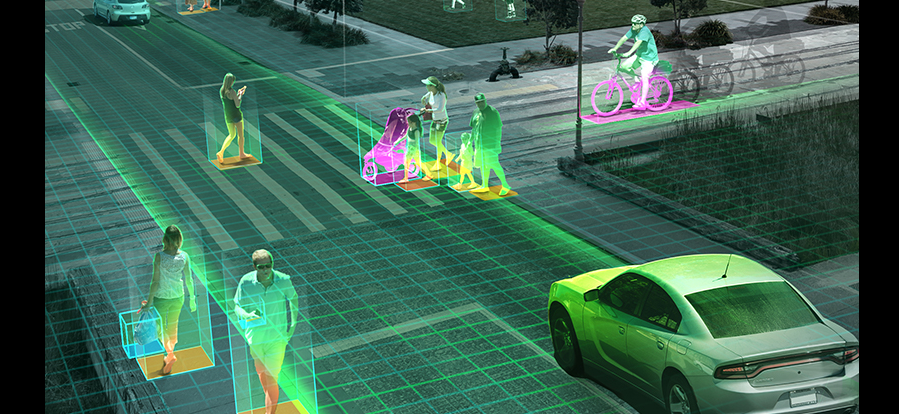

Programación de protocolos con sockets
-
Click para ver información
Aplicación de la materia Redes de computadoras de la Escuela Superior de Cómputo, para escritura de protocolos a nivel bajo requiere Linux.
 Calculadora de subredes
Calculadora de subredes
-
Click para ver información
Aplicación la cual obtiene la información general de datos como clase de red y calcula las subredes con VLSM.

App Java Image Analysis (OpenCV)
-
Click para ver información
Aplicación/proyecto de un curso de capacitación, cuyo topico fue la visión artificial con el lenguaje Java y el uso de la API OpenCV.